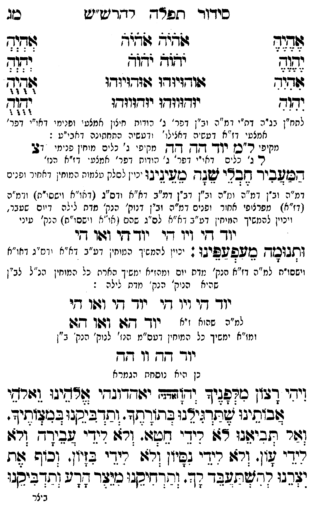

Neue Klartextfassung
=== טבלה === [טור ימין] אֶהֶיֶהֶ יֶהֶוֶהֶ אִהִיִהִ יִהִוִהִ [טור אמצעי] אֹהֹיֹהֹ אֹהֹיֹהֹ יֹהֹוֹהֹ יֹהֹוֹהֹ אוּהוּיוּהוּ אוּהוּיוּהוּ יוּהוּווּהוּ יוּהוּווּהוּ [טור שמאל] אְהְיְהְ יְהְוְהְ אֻהֻיֻהֻ יֻהֻוֻהֻ === סוף טבלה === [לחח"ן בג"ה דת"י דמ"ה וב"ן דפר' ג' הודות חיצון אמצעי ופנימי דאו"י דפר' אמצעי דז"א דעשיה דכללו' ורביעיה התחתונה דאבי"ע:] [מקיפי ל"ם] יוד הה הה [מקיפי ג' כלים] [מוחין פנימי דצ'] צ ל ג' [ג' כלים דאו"י דפר' ג' הודות דפר' אמצעי דז"א הנז'] המעביר חבלי שנה מעינינו [יכוין לסלק צלמות המוחין דאחור ופנים דמ"ה וב"ן ומו' נר"ן דע"ב דאו"א וס"ג (דאו"א וישסו"ת) ומ"ה (דז"א) מפרצופי אחור ופנים דמ"ה וב"ן דנוק' הנק' מדת לילה דיום שעבר, ויכוין להמשיך המוחין דע"ב דאו"א לס"ג שבהם (דאו"א וישסו"ת) הנק' עיני:] יוד הי ויו הי יוד הי ואו הי ותנומה מעפעפינו: [יכוין להמשיך המוחין דע"ב דאו"א וס"ג דאו"א וישסו"ת למ"ה דז"א הנק' מדת יום ומז"א ימשיך הארת כל המוחין הנז"ל לב"ן שהיא נוק' מדת לילה:] יוד הי ויו הי יוד הי ואו הי יוד הא ואו הא [מ"ה שהוא ז"א] [ומז"א ימשיך כל המוחין דעב"מ הנז' לנוק' הנק' ב"ן] יוד הה וו הה (כן היא נוסחת הגמרא) ויהי רצון מלפניך יהוה (אדני) יאהדונהי אלהינו ואלהי אבותינו שתרגילנו בתורתך. ותדביקנו במצותיך. ואל תביאנו לא לידי חטא ולא לידי עבירה ולא לידי עון. ולא לידי נסיון ולא לידי בזיון. וכוף את יצרנו להשתעבד לך. ורחקנו מיצר הרע והדביקנו
Original gegen neue OCR · Niqqud für Vergleich ausgeblendet
Original
=== טבלה === [טור ימין] אהיה יהוה אהיה יהוה [טור אמצעי] אהיה אהיה יהוה יהוה אוהויוהו אוהויוהו יוהוווהו יוהוווהו [טור שמאל] אהיה יהוה אהיה יהוה === סוף טבלה === [לחח"ן בג"הK090-001 דת"י ∅K090-002 דמ"ה וב"ן דפר' ג' הודות חיצון אמצעי ופנימי דאו"י דפר' אמצעי דז"א דעשיה דכללו' ורביעיה התחתונה דאבי"ע:] [מקיפי ל"ם] יוד הה הה [מקיפי ג' כלים] [מוחין פנימי דצ'] צ ל ג' [ג' כלים דאו"י דפר' ג' הודות דפר' אמצעי דז"א הנז'] המעביר חבלי שנה מעינינו [יכוין לסלק צלמות המוחין דאחור ופנים דמ"ה וב"ן ומו' נר"ן דע"ב דאו"א וס"ג (דאו"א וישסו"ת) ומ"הK090-003 (דז"א) מפרצופי אחור ופניםK090-004 דמ"ה וב"ן דנוק' הנק' מדת לילה דיום שעבר,K090-005 ויכוין להמשיך המוחיןK090-006 דע"ב דאו"אK090-007 לס"ג שבהם (דאו"א וישסו"ת) הנק' עיני:] יוד היK090-008 ויו הי יוד הי ואו הי ותנומה מעפעפינו: [יכוין להמשיך המוחיןK090-009 דע"ב דאו"א וס"ג דאו"א וישסו"תK090-010 למ"ה דז"א הנק' מדת יום ומז"א ימשיך הארתK090-011 כל המוחין הנז"לK090-012 לב"ן שהיא נוק'K090-013 מדת לילה:] יוד הי ויו הי יוד הי ואו הי יוד הא ואו הא [מ"ה שהוא ז"א] [ומז"אK090-014 ימשיך כל המוחין דעב"מK090-015 הנז' לנוק' הנק' ב"ן] יוד ההK090-016 וו הה (כן היא נוסחת הגמרא) ויהי רצון מלפניך יהוה (אדני) יאהדונהי אלהינו ואלהי אבותינו שתרגילנו בתורתך. ותדביקנו במצותיך. ואל תביאנו לא לידי חטא ולא לידי עבירה ולא לידי עון. ולא לידי נסיון ולא לידי בזיון. וכוף את יצרנו להשתעבד לך. ורחקנו מיצר הרע והדביקנוK090-017
OCR · fehlbar
סידור תפדדך- רדדיש"יש סג צג לבג לל- לב[ב לל ((ד. ו: (ל: ג(גוד גשודזיודזו :וודויוךו אז. ודג(ד יזדדדוודו יוד(ווד ו ל334 לחח"ן גג"תK090-001 דת"י ו מ"ה וב"ן דפר ' ג' ודיקא חיצון אמצטי זפנ ימי זזאו"י דפר' אמצטי דז"א דעש"ה דאגילוץ - דטשיה הסחתינה דאבי"ע : מקיפי ר"סכז רזךד- דקדק [[ד- מק פ' ג' כל ים מיחין נ מי 27 ר ג' כנ ים דאייי (זפר' ג' מזדוח דפר' אמצע- ד ז"א הנז' בעו4ביך חבצי 72 כ'ציגיגו ני.. ללין נימוח יזמו -זיזיר ופנ מ"ה וב"ן דמ"ד ונז"ה וב"ן דב"ן דמ"ב דא"א ודס"ג ( אוזא (יששי"ח)K090-002 דמ"ה ∅K090-003 (דז"א) מפרצזפי אחזר זפניםK090-004 דמ"ה וב"ן דנוק' הנק' מדח ל לה זיו ם שעבר.K090-005 ויכוין להמשיך הוויח"ןK090-006 דע"ב -א"אK090-007 לס"ג שהם ( ייא . ישסז"ח.) ה נק' טיני יוך דזיK090-008 ויו זי יוך דזי ושו די ותגוגוד ב 2ל גליג: ג. יניי. להי ך יייח'.K090-009 דע"ב דצ"א -וז"ג ודי." וישסו"חK090-010 למ"ה דז"א הנק' מדת יום ומהז"א ימש ך האריזK090-011 כל המוחין חנ"לK090-012 לב"ן שהיא הניק' הנק'K090-013 מדת לילה : יודך ד[י וין דזי יוך דדי (גפו דזי יק שהי) י' יוך דזגן (גתו ג: ומז"אK090-014 ימשיך כל המוחין דטס"מK090-015 הנז' לנוק' הנק' ב"ן יוך -(-K090-016 וו ד[- נן יא נוסחי: הגמר א ידי ד2זן כקפביד "דז[תבד ידודדובדי דשינו וזורשי זבינ נ: ל זר:יד:: בחידיזד זתדבזכ: בגצווזי. (זר זביגוג: 67: רידי שעג. ורז: דידי גביר- זרזו ריד' ו. ורז רידי ביון ורז: חידי בץיו ' (כיש צות צרנו ומעבד דד' דדיקנ כנל נד: ודדביסני ב יצרK090-017